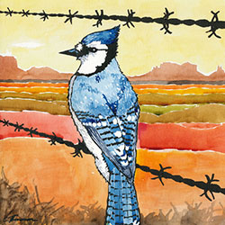
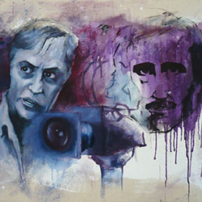
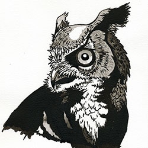
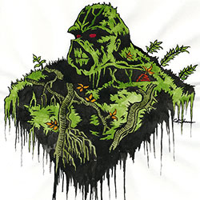

Art Gallery
-

Blue Jay in the Desert
2012
Ink & Watercolor on Paper
A blue jay would die in the desert. It would take years for it to adapt to that kind of climate and environment, and there are far too many native desert creatures that would prey upon it. The background of this watercolor and Ink Paintings is Monument Valley, Utah, and is adapted from a photograph seen in my book, “Open Range: From Monument Valley to the Mojave Desert”. For this painting, I wanted to try a new style: something more multi-colored and less sad-looking than my previous work; the blue jay’s cold blues would contrast the warm, earthy tones of the sacred Navajo land. Another significance of this painting is that it was the last piece I did at my temporary art studio in downtown Columbus, Ohio in May 2012.
-

Corman and Poe
2007
Oil on Canvas
Near the end of my undergraduate career, I became obsessed with the B-movie filmmaker Roger Corman and his adaptations of the works of Edgar Allen Poe. Despite being some of his most professional-looking films, most were completed in about 2 weeks. For this painting, I wanted to implement a visual style that was representative of Corman’s high quality/fast production methods. To achieve this, I tried to focus on realistic-looking faces, while making other elements look like I took shortcuts. This rough/polished dichotomy later became a staple of much of my paintings, where the goal is to create a discourse between realism and abstraction. The canvas itself was handmade and engineered to have the exact same dimensions as a 16:9 aspect ratio movie frame.
-

Jim Clark Driving The Lotus 49
2014
Ink & Watercolor on Paper
This painting of Jim Clark driving his iconic Lotus Formula One car was given to my Dad as a Christmas present in 2014. I decided to post it on my website today (March 4, 2015), as it would have been Jim’s 79th birthday. He is considered by some to be the greatest F1 driver in history. This portrait depicts Clark driving the Lotus 49 at the 1968 British Grand Prix — the last race Clark ever won (or finished) before his untimely death. The Lotus 49 featured a V8 Ford-Cosworth DFV engine, which is one of the most successful engines in F1 history. This was one of the first paintings of a car I had done in many years and I’m very pleased with it.
-

Eastern Screech Owl
2014
Ink on Paper
Although this Screech Owl painting will appear in my forthcoming bird painting book, it was completed months before I even had the idea to do such a book. In fact, the success it found on Instagram was part of what inspired me to further pursue birds as a subject matter for my art. The painting is all India Ink on watercolor paper, and I think it works quite well with such high-contrast values and no color. It was given as a present to my Mother and now hangs in their living room.
-

Swamp Thing
2014
Ink & Watercolor on Paper
Swamp Thing is easily one of the most powerful comic book characters — able to control all plant life on Earth and regenerate his body at will. When I painted this, I was going through a big comic book phase and reading all of Alan Moore's amazing Swamp Thing comics from the 1980s. This is based on Stephen Bissette's version of Swampy, who penciled the Alan Moore Swamp Thing comics.
-

Vincent Price in His Laboratory
2006
Ink on Paper
It seems fitting that the best ink portrait I did during my undergraduate years (in my opinion) was of my favorite actor, Vincent Price. Of all the portraits I’ve ever painted, I still feel that this is the best likeness. I feel that the way I controlled the gray values and colors here is among my best. The background the portrait is original, but loosely based on Tim Burton’s “Edward Scissorhands” (Price’s last film). I sold this drawing to a college roommate of mine in 2007.


{kind=link}
{kind=link}
{kind=link}
{kind=link}